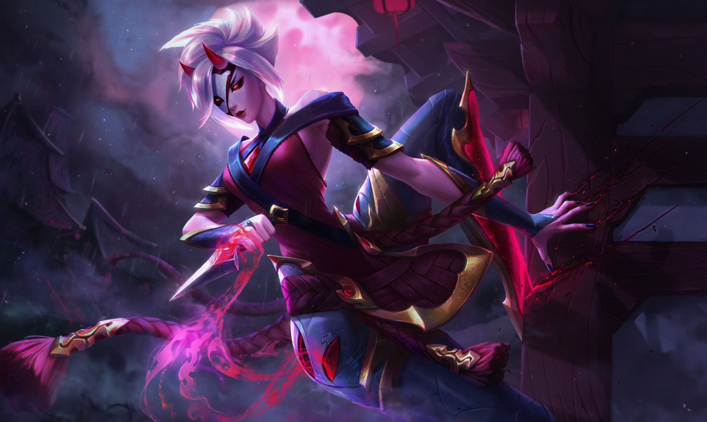
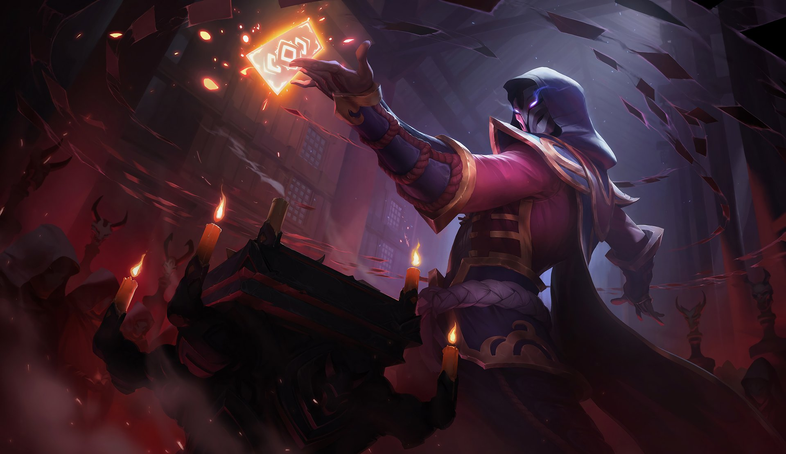
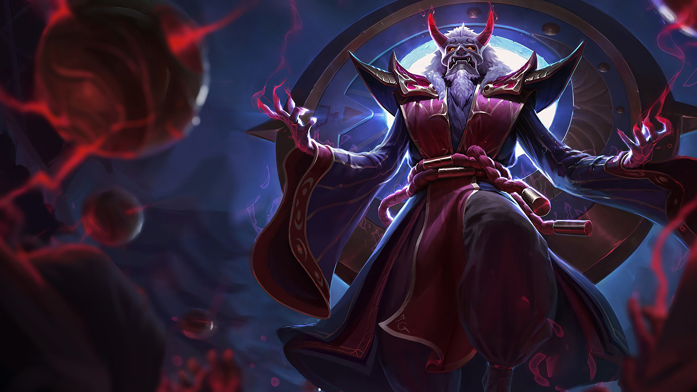

E-sport
LEC
Znany też jako League of Legends European Championship (dawniej znany jako EU LCS - League Championship Series) jest elitarną ligą esportową League of Legends w Europie. W jej skład wchodzi 10 zespołów, które mają w danej rundzie do rozegrania 18 gier (dwa razy z każdym). Są dwie rundy rozgrywek - wiosenna i letnia, a dodatkowo po rozegraniu nich, najlepsza szóstka gra w playoffach, które gwarantują punkty do uczestnictwa w Mistrzostwach Świata. Do najważniejszego turnieju awansują trzy ekipy: zwycięzca letniego cyklu, drużyna z największą ilością punktów z obu rund oraz drużyna z regionalnych eliminacji.
European Masters
To specjalny turniej rozgrywany dla najlepszych regionalnych drużyn z 13 lig, który jest rozgrywany przez około trzy tygodnie wiosną i latem (najczęściej chwilę po rozegraniu playoffów LEC). Drużyny walczą o tytuł najlepszej drużyny z Europy.
Ultra Liga
To najważniejsza polska liga oraz flagowa produkcja stworzona przez Polsat Games, w ramach której profesjonalni zawodnicy esportowi mogą zmierzyć się w walce o mistrzostwo. Obecnie projekt skupia się na League of Legends w oficjalnej współpracy z Riot Games, a rozgrywki najlepszych graczy w Polsce są transmitowane do telewizji oraz Internetu. Dzięki doświadczeniu ekipy stojącej za przedsięwzięciem, Ultraliga łączy wysoką jakość produktu telewizyjnego z luźną konwencją znaną z sieci. W tej chwili znajduje się 8 ekip a po raz pierwszy liga (tzw. "Sezon Zerowy") została zorganizowana w 2. połowie 2018 roku.
Mistrz oraz wicemistrz danego splitu mają prawo do uczestnictwa w European Masters.